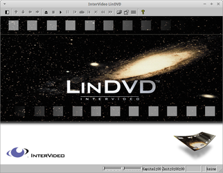

LinDVD
Dieser Artikel wurde für die folgenden Ubuntu-Versionen getestet:
Ubuntu 16.04 Xenial Xerus
Ubuntu 14.04 Trusty Tahr
Zum Verständnis dieses Artikels sind folgende Seiten hilfreich:
Das kommerzielle Programm LinDVD der Firma Intervideo Inc. bringt Lizenzen mit, welche es erlauben, gekaufte DVDs unter Ubuntu abzuspielen (siehe Kopierschutz und DVD-Wiedergabe). Neben DVDs können VCDs, Audio CDs sowie Audio- und Videodateien der Formate MPEG1, MPEG2, MP3, VOB, PVR (Personal Video Rekorder) und AC3 abgespielt werden. Das Programm ist nur über Reseller käuflich zu erwerben. Seit 2006 gehört das Unternehmen zu Corel  .
.
| LinDVD |
Alle Versionen von LinDVD beinhalten eine identische Decoder-Engine. Die Version, die von Corel als Grundversion angeboten wird, hat die Versionsnummer 1.2.6. Für jeden OEM Partner werden dann noch nach den jeweiligen Anforderungen entsprechende Änderungen vorgenommen. So gibt es verschiedene Skins und unterschiedliche Devices, die angesprochen werden. Je nach Version wird dann auf /dev/cdrom oder auf /dev/dvd zugegriffen (ab Ubuntu 13.10 existiert /dev/dvd nicht mehr).
Eine Alternative zu LinDVD ist das ebenfalls kommerzielle Produkt ONEPLAY DVD Player, der auf GStreamer basiert.
Installation¶
Folgendes Paket muß im Vorfeld installiert [7] werden:
libstdc++6:i386
pulseaudio-utils:i386 (Ermöglicht LinDVD den Zugriff auf die Soundkarte)
 mit apturl
mit apturl
Paketliste zum Kopieren:
sudo apt-get install libstdc++6:i386 pulseaudio-utils:i386
sudo aptitude install libstdc++6:i386 pulseaudio-utils:i386
Nun kann mit der eigentlichen Programminstallation fortgefahren werden. Die Installation verläuft unter Ubuntu relativ simpel, erfordert aber Root-Rechte. Benötigt wird für die Installation lediglich die Datei lindvd-VERSIONSNUMMER.tgz. Die Datei in ein vorher erstelltes temporäres Verzeichnis (z.B. /tmp) entpacken [1]. Nun in das Verzeichnis wechseln und den Ordner /lindvd verschieben [2]:
sudo mv lindvd /opt/LinDVD #verschiebt den Programmordner nach /opt - eventuell den Ordnernamen lindvd anpassen sudo ln -s /opt/LinDVD/lindvd /usr/local/bin/lindvd #ermöglicht den Programmstart aus der Konsole heraus sudo ln -s /opt/LinDVD/libiviXXXX.so /usr/lib/libiviXXXX.so #kopiert die Lizenzdatei - ansonsten startet es im Demomodus sudo ldconfig #neu einlesen der Bibliothekspfade sudo cp /opt/LinDVD/skins/common/LinDVD.xpm /usr/share/pixmaps #Icon kopieren
Hinweis:
XXXX steht hier für den Firmennamen die LinDVD in Lizenz verkauft. Diesen entsprechend anpassen z.B. libivigraf.so, libivimedion.so oder libivimandriva.so.
Der DVD-Player kann nun von jedem Benutzer auf dem System per padsp lindvd gestartet [8] werden. Das Programm abschließend dem Menü hinzufügen [3] und das passende Icon auswählen.
Oberfläche¶
Die Oberfläche des Programms ist intuitiv zu bedienen - viele Funktionen lassen sich über die linke  oder rechte
oder rechte  Maustaste sowie über die Tastatur erreichen. Ein Doppelklick mit der linken Maustaste im Abspielfenster (de)aktiviert den Vollbildmodus.
Maustaste sowie über die Tastatur erreichen. Ein Doppelklick mit der linken Maustaste im Abspielfenster (de)aktiviert den Vollbildmodus.
| Steuerung | |||
| Symbol | Beschreibung | Symbol | Beschreibung |
| Steuerung des Players. | Wiedergabeliste - hinzufügen / entfernen von Dateien und Medien. | ||
| DVD auswerfen. | / | Eigenschaften verändern. | |
| Lautstärke anpassen. | Zusätzliche Menüelemente ein/ausblenden. | ||
| Vollbildmodus (de)aktivieren. | öffnet die Hilfedatei in einem Browser | ||
| Fortschrittsbalken der Wiedergabe. | Über die Statusleiste erreicht man alle erwähnten Optionen. | ||
| Einstellungen an der Helligkeit, den Farbwerten und der Lautstärke vornehmen. | |||
Bildschirmphoto¶
Um ein Bildschirmphoto aufzunehmen die Taste P drücken. Die Bilder werden im Homeverzeichnis unter ~/lindvdcap als *.bmp abgespeichert und können dann in einem Bildbearbeitungsprogramm weiterbearbeitet werden.
Zusatzmenü¶
Im Zusatzmenü erreicht man einige erweiterte Steuerungsoptionen die für den normalen Programmbetrieb in der Regel nicht benötigt werden:
| Zusatzmenü | |||
| Symbol | Beschreibung | Symbol | Beschreibung |
| Menü anwählen | Untertitel wählen. | ||
| Kapitelauswahl |  | Winkel verändern. | |
| Titelanwahl | Lesezeichen hinzufügen und verwalten. | ||
| Tonspur wechseln. | Abspielgeschwindigkeit variieren. | ||
Eigenschaften¶
| Eigenschaften | |||
| Reiter | Beschreibung | ||
Allgemein | Einstellungen zur Region, Wiedergabemodi für DVDs und Ansichtsmodi verändern. | ||
Audio | Festlegung der Audiokanäle. | ||
Anzeige | Wiedergabequalität, Seitenverhältnis, Vollbildmodus und Seitenverhältnis einstellen. | ||
Kindersicherung | Kindersicherung für DVDs mit einem Passwort setzen. | ||
Konfiguration¶
|  |
| Abspielfenster |
Führt man einen Rechtsklick im Abspielfenster aus gelangt man über das Kontextmenü zu den wichtigsten Optionen. Neben den Elementen zur Steuerung der Wiedergabe, dem Zusatzmenü, der Wiedergabeliste und den Eigenschaften ist es hier möglich einzelne Anzeigeelemente ein- bzw. auszublenden.
Skins¶
Führt man einen Rechtsklick auf dem Player aus gelangt man in ein Menü, welches die Auswahl weiterer installierter Skins erlaubt um das Aussehen zu verändern. Die Skins liegen im Ordner /opt/LinDVD/skins.
Deinstallation¶
Um das Programm zu entfernen sind folgende Schritte notwendig [2]:
sudo rm -dr /opt/LinDVD/ #löscht den Ordner sowie dessen Inhalt sudo rm /usr/local/bin/lindvd #löscht den Link sudo rm /usr/lib/libiviXXXX.so #löscht die Lizenz sudo rm /usr/share/pixmaps/LinDVD.xpm #löscht das Icon sudo ldconfig #neu einlesen der Biblitohekspfade
Hinweis:
XXXX steht hier für den Firmennamen die LinDVD in Lizenz verkauft. Diesen entsprechend anpassen z.B. libivigraf.so, libivimedion.so oder libivimandriva.so.
Sofern ein Menüeintrag [3] vorgenommen wurde sollte dieser ggf. entfernt werden.
Tastenkürzel¶
| Tastenkürzel | |||
| Taste(n) | Beschreibung | Taste(n) | Beschreibung |
| Wiedergabe starten / Pause | G | Betrachtungswinkel verändern | |
| Ende | Wiedergabe beenden | A | Tonspur |
| Bild ↑ | vorheriges Kapitel | C | Kapitelauswahl |
| Bild ↑ | nächstes Kapitel | S | Untertitelauswahl |
| R | zurückspulen | T | Titelauswahl |
| F | vorspulen | Z | Vollbild ein/aus |
| M | Ton ein/aus | ← ↑ → ↓ | Navigation |
| ⇧ + ↑ / ⇧ + ↓ | Lautstärke ändern | ⏎ | Auswahl |
| + / - | Helligkeit regeln | 1 - 9 | Nummernfeld |
| P | Bildschirmphoto anfertigen. | X | Programm beenden |
Problembehebung¶
Laufwerk¶
Um ein anderes DVD-Laufwerk mit LinDVD zu nutzen als das ursprüngliche, muss die Umgebungsvariable angepasst werden:
export CDROMDEVICE=/dev/sr0 lindvd #hier das gewünschte Laufwerk eintragen
Alternativ kann man auch folgendes machen:
sudo ln -s /dev/scd0 /dev/dvd
Vollbild¶
Sofern im Vollbildmodus kein Bild angezeigt wird bzw. eine sehr hohe CPU Last auf dem Rechner erzeugt wird fehlt der Grafikkartentreiber.
Wiedergabe¶
Das Programm startet und beendet die Wiedergabe nach wenigen Minuten. LinDVD läuft im Demo-Modus. Die Lizenzdatei des Programms muss im Ordner /usr/lib/ abgelegt werden - siehe Installation.

- Erstellt mit Inyoka
-
 2004 – 2017 ubuntuusers.de • Einige Rechte vorbehalten
2004 – 2017 ubuntuusers.de • Einige Rechte vorbehalten
Lizenz • Kontakt • Datenschutz • Impressum • Serverstatus -
Serverhousing gespendet von